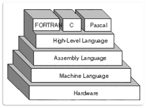
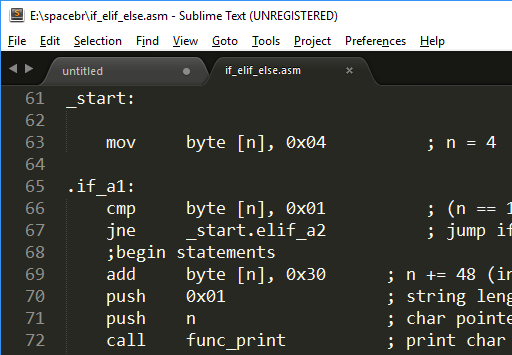
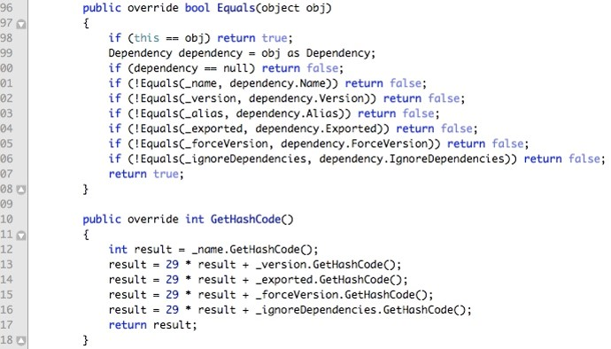

Está redondamente enganado, quem pensa que o computador é inteligente. Sozinho, o computador é apenas um amontoado de peças eletrônicas que não servem para nada. Para ser possível utilizar um computador, é necessário que existam linhas e mais linhas de programação envolvidas.
O processo de criação de um software sempre começa com a tentativa de se resolver um problema. Para isso, é necessário criar um algoritmo. Algoritmos nada mais são do que ações executadas de maneira sequencial, para que se atinja um determinado objetivo.
Para que um algoritmo seja interpretado pelo computador, ou qualquer outro dispositivo em questão, é necessário que este seja escrito em uma linguagem específica. Esta é conhecida como Linguagem de Programação. Logo Algoritmo = Lógica.
As primeiras linguagens utilizadas na história foram as Linguagens de Baixo Nível, que eram utilizadas na programação dos primeiros computadores. Considerada a primeira Linguagem de Programação Estruturada, porém ainda de baixo nível, o Assembly permitiu que os primeiros computadores fossem programados.
Cada linguagem de programação possui suas características, vantagens e desvantagens e podem ser utilizadas em diferentes cenários. As linguagens foram evoluindo com o passar do tempo e foram surgindo também as Linguagens de Alto Nível.
No início existiam poucas Linguagens, mesmo que fossem de Alto Nível. Algumas das primeiras, mais conhecidas – até hoje – são: COBOL, FORTRAN, PASCAL e CLIPPER. Hoje em dia, existem inúmeras linguagens, sendo extremamente difícil numerá-las. Veja: https://devdocs.io
O Código Fonte – ou somente Fonte – é o texto escrito respeitando os padrões exigidos por determinada linguagem de programação. Estes padrões são a sintaxe da Linguagem de Programação. Cada Linguagem pode possuir uma sintaxe diferenciada – inclusive pode ser até única.
